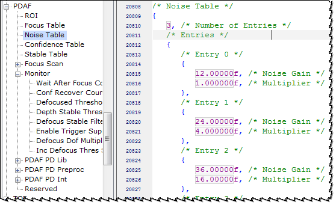

PD information from the sensor may become noisy when a higher gain is applied. When the noise gain is higher, PDAF may get an unreliable defocus value, which can cause focus failure. To adapt for a higher gain and to maintain accuracy, you can increase the fine scan range by tuning the noise table.
The fine scan range is calculated by applying the appropriate multiplier from the noise gain table to the fine scan step size.
Fine-step focus scan range =
Fine scan step size x Range multiplier(noise gain [dB])The multiplier between two gain entries is linearly interpolated. The defaults for the table are as follows:
